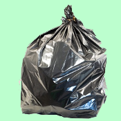

Le plastique PEBD (Polyéthylène basse densité), ou LDPE en anglais pour low density polyethylene est un plastique souple, imperméable à l’eau, et résistants aux chocs. Il est utilisé pour fabriquer des sacs poubelles, des sacs de congélation, des sacs réutilisables de supermarché ou encore des bâches. Ce plastique n’est pas recyclable dans les poubelles de tri. On doit donc le jeter dans la poubelle des déchets ménagers.
